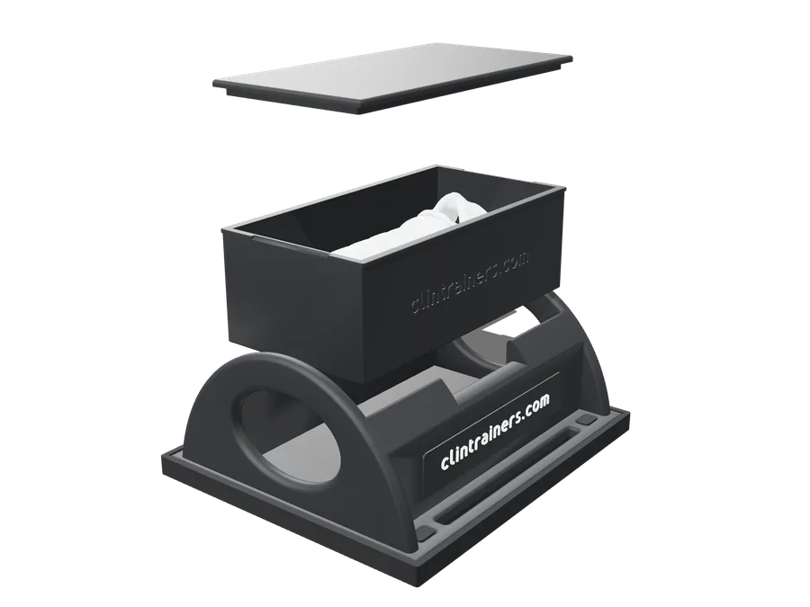

One base, many skills
Buy the base once and add cartridges as your curriculum grows. Additional cartridges are in development.
ClinTrainers One · CT1
An adaptable simulation task trainer designed to help healthcare professionals practice clinical skills, build confidence, and prepare for real-world scenarios.
Available firstCricothyrotomy & Tracheostomy Placeholder: not the actual product
Placeholder: not the actual product
How it works
CT1 is a reusable task-trainer base that holds drop-in skill cartridges. Each cartridge carries the anatomy and tissue for one procedure. The base stays on the table session after session.

Place it on any table. The rubber pad keeps it steady. No power, pumps or tubing.

Seat the cartridge for the skill you're teaching. It sits in a keyed pocket in the base.

When the cartridge is used, lift it out and seat a fresh one for the next learner.
For simulation programs
Less setup, faster turnover between learners, and a lower cost for every repetition.
Buy the base once and add cartridges as your curriculum grows. Additional cartridges are in development.
After a cutting procedure, swap in a fresh cartridge. Nobody rebuilds skin and membrane layers mid-session.
A fresh cartridge gives each learner an identical starting point, which keeps practice and assessment consistent.
No power, pumps, tubing or tools. Use it in a skills lab, a classroom or a field training site.
Fluids and cut tissue stay inside the cartridge, so the base stays clean and ready for the next skill.
You replace an affordable cartridge, not costly skins or a whole trainer, so programs can schedule more repetitions.
Available first · Cric/Trach Starter Kit
The first CT1 cartridge covers front-of-neck airway access: cricothyrotomy and tracheostomy on one combined cartridge. It's rarely performed in practice, so the skill has to be rehearsed on a schedule.
Features, applications, gallery, specifications and documents.

FAQ
Clinical educators, simulation centers, medical, nursing and PA programs, EMS and fire training programs, and healthcare organizations that teach procedural skills.
The cricothyrotomy and tracheostomy cartridge is available first, as part of the Cric/Trach Starter Kit. The other cartridges are in development and will be released after they pass validation.
That's the design goal of the system. Every CT1 cartridge is being designed to fit the same universal base.
No. CT1 is simulation training equipment for education only. It is not intended for clinical or diagnostic use.
Lift the used cartridge out of the base and seat a fresh one. No tools, tubing or cleanup inside the base. How many practice attempts each cartridge supports is being confirmed.
No. There are no electronics, pumps or external fluid connections. Place the trainer on a flat surface and seat a cartridge.
Pricing is provided by quote. Request a demo or email us with your program details and we'll follow up.
Yes. Use "Request a Demo" and tell us about your program and preferred timing.
Request a demo
Tell us about your program and the skills you teach. We'll arrange a demonstration and follow up with a quote.